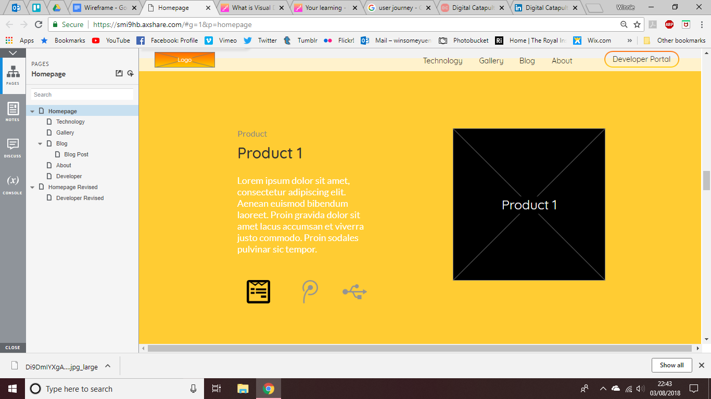

Degrees7
The founder of Kodama Ltd. wanted to scrap the current image of the brand as it was aimed at kids and they were soon going to be releasing a VR product aimed at designers universally. This was a 3 month project, which let me work remote and at Digital Catapult (the hub for VR/AR startups) with a small team. I was introduced to new software such as Axure for high-fidelity prototyping and Unity where the VR/AR software was created, but also organisation tools Trello and Slack. I was the primary researcher for the concept of the new website, the UX designer for creating the wireframes, and the web developer for creating the customised WordPress template.
Research
Early stage of research I made a document on the visual designs of websites to gain a better understanding on competitors websites by reviewing the typography, graphics, colours, layout, interactions and branding. This research was useful in helping the team make a decision of making one main website, instead of 2.
Empathy Map
I developed an empathy map of our main audience, which were designers who would most likely use our product even though it was universal. Developing the empathy map made me clearly understand what the user wanted out of the product we would make. It made me think about any pain points (further thought about in user journey) that I would have to later address to the team on how we would want to tackle these, and coming up with my own ideas to propose to these issues.


User Journey
I went to a UX masterclass with the company, which was great in working as a team on developing ideas and understanding the purpose for the website. The crash-course made it easier to map out the user journey to aid me in developing prototypes. I worked collaboratively with the founder to make low-fidelity prototypes. We bounced ideas from one another, to add different components to our main page of the website. We explored various ideas in which we could best capture user interest and envoke feelings.

WireFrames
If you click on the below image you can have a look at the high-fidelity wireframe created for the website. It took a couple
iterations using feedback from the team. Even during the development of the website, the wireframes were revisited, to test out
certain features whether they should be added/edited.
